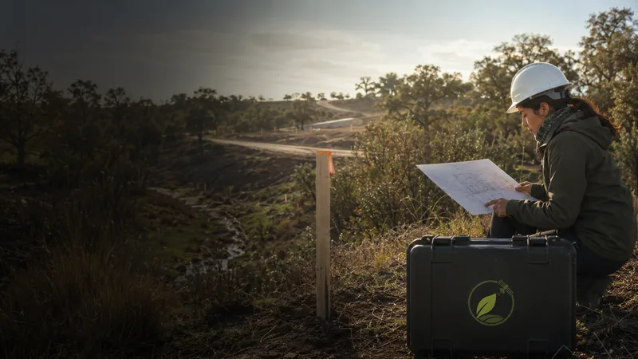

Definir el área de influencia ambiental es una decisión técnica que condiciona el diagnóstico territorial y la calidad de la evaluación. Esta guía explica cómo aplicar criterios del SEA, elegir la escala espacial adecuada y reunir evidencia territorial y cartográfica para justificar el alcance en un expediente.
En resumen
- El área de influencia ambiental debe justificar la relación causa–efecto entre proyecto y receptor.
- Use criterios sectoriales publicados por el SEA como orientación técnica, no como receta única.
- Ajuste la escala espacial según impactos potenciales: local, intermedio o de cuenca/territorio.
- Documente fuentes cartográficas y evidencia territorial para sustentar límites y supuestos.
- La cartografía ambiental y el diagnóstico territorial deben integrarse en la sección metodológica del expediente.
1. ¿Qué es el área de influencia ambiental y cuándo se define?
El área de influencia ambiental es el espacio geográfico dentro del cual el proyecto puede causar efectos relevantes sobre componentes ambientales, sociales y patrimoniales. Su definición debe ocurrir temprano en el proceso de evaluación ambiental para orientar el diagnóstico territorial, el levantamiento de línea base y la selección de estudios técnicos.
No existe una única regla universal: la delimitación depende del tipo de proyecto, la matriz de impactos esperada y la magnitud/alcance de las actividades. Por eso, si bien es útil apoyarse en los criterios del organismo regulador, la justificación debe ser específica y basada en evidencia.
Punto clave
definicion
2. Criterios técnicos del SEA aplicables a la delimitación
El Servicio de Evaluación Ambiental (SEA) publica guías, criterios e instructivos que orientan la identificación del alcance espacial y las metodologías a emplear. Estos documentos sirven como referencia técnica para:
- Identificar componentes susceptibles (agua, suelos, biodiversidad, comunidades humanas, patrimonio).
- Establecer la coherencia entre posibles fuentes de impacto y el área afectable.
- Determinar la necesidad de estudios a escala de cuenca, hidrológica, ecológica o comunal.
Use los criterios del SEA como marco de respaldo técnico, y explique en la metodología del expediente por qué se adoptaron determinados límites y no otros. Evite presentar el criterio del SEA como único requisito: debe integrarse con la evidencia territorial específica del sitio.
Punto clave
criterios_sea
3. Elegir la escala espacial: local, intermedia y de territorio
La escala espacial adecuada depende de la naturaleza del impacto. Proponga una escala y justifíquela con causales concretas:
- Escala local: impactos directos en el predio o en áreas adyacentes (ruido, polvo, tránsito, remoción de suelo).
- Escala intermedia: alcance mayor, por ejemplo afectación de corredores faunísticos, cuencas pequeñas o redes viales.
- Escala territorial o de cuenca: impactos que se propagan por sistemas hídricos, sedimentación en cuencas o efectos acumulativos regionales.
Explique cómo cada tipo de impacto concreta una distancia o unidad espacial (metros, tramos de río, subcuenca). Cuando existan incertidumbres, defina escenarios conservadores y escale análisis complementarios para el peor caso razonable.
Punto clave
escala
4. Evidencia territorial y cartografía ambiental para justificar límites
La delimitación debe apoyarse en información cartográfica y evidencia de terreno. Reúna y documente:
- Cartografía base: límites prediales, redes viales, red hidrográfica, uso del suelo.
- Mapas temáticos: hábitats, áreas protegidas, patrimonio, vulnerabilidad de suelos y riesgos naturales.
- Información local: inspecciones de terreno, entrevistas con autoridades y comunidades, registros de monitoreo.
Use sistemas SIG para integrar capas y producir mapas que muestren la relación causa–efecto entre la obra y los receptores. Si requiere apoyo en cartografía ambiental o análisis SIG, revise nuestros servicios técnicos para levantamiento y modelación geoespacial: servicios de cartografía y SIG.
Punto clave
evidencia
5. Cómo presentar y justificar el área de influencia en el expediente
La justificación en el expediente debe ser explícita, reproducible y trazable. Incluya al menos:
- Descripción metodológica: criterios elegidos, fuentes de datos, supuestos y límites de análisis.
- Mapas con proyección, escala y leyenda clara; capas utilizadas y su origen.
- Matriz causa–efecto que relaciona actividades del proyecto con componentes y distancias de efecto.
- Escenarios alternativos y medidas de verificación (muestreos, monitoreos) para validar supuestos.
Evite afirmaciones generales: cada límite espacial requiere respaldo técnico (datos cartográficos, referencias metodológicas y evidencia de terreno). Si necesita asesoría para estructurar la justificación técnica y los mapas del expediente, puede contactarnos en nuestro formulario de contacto.
Punto clave
justificacion
En DPZ Consulting abordamos la diagnóstico ambiental-territorial como un servicio acotado, con producto, plazo y alcance definidos.
Fuentes y referencias
Revisamos estas fuentes oficiales para preparar este contenido. La normativa puede actualizarse; verifica siempre el caso concreto antes de ejecutar un proyecto.
Preguntas frecuentes
¿Puedo usar una distancia fija (ej. 500 m) para todas las especies y componentes?
No es recomendable aplicar una distancia fija de manera indiscriminada. Algunas afectaciones requieren límites mayores (cuencas, corredores) y otras menores. Justifique cualquier distancia con criterios técnicos, referencias sectoriales y evidencia local.
¿Qué fuentes cartográficas son mínimas para respaldar la delimitación?
Al menos contraste cartografía base (límites, hidrografía, vías), mapas temáticos relevantes al componente afectado y evidencia de terreno. Documente la proyección, la fecha y el origen de cada capa.
¿Debo considerar impactos acumulativos al delimitar el área de influencia?
Sí. Cuando existan actividades pasadas, presentes o planificadas que interactúen con el proyecto, valore una escala que permita evaluar efectos acumulativos y justifique el criterio adoptado en la metodología.